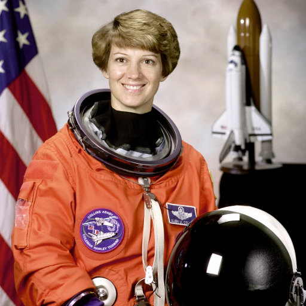
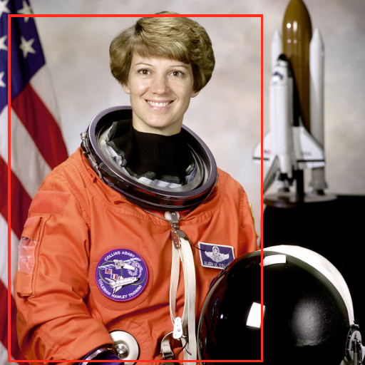

Real photograph → C# preprocessing → MIGraphX GPU → decode + NMS


| Class | Score | Original image box (xyxy) |
|---|---|---|
| person | 0.9259 | 11.4, 20.3, 368.8, 507.2 |
Raw GPU / ORT CPU: 301665 elements, 0 failures · conf ≥ 0.30 · class-aware NMS IoU 0.45
Functional demonstration; no mAP claim. Source: NASA public-domain astronaut photo via scikit-image. Boxes and scores are generated by the actual C# application; no AI-generated UI or predictions.